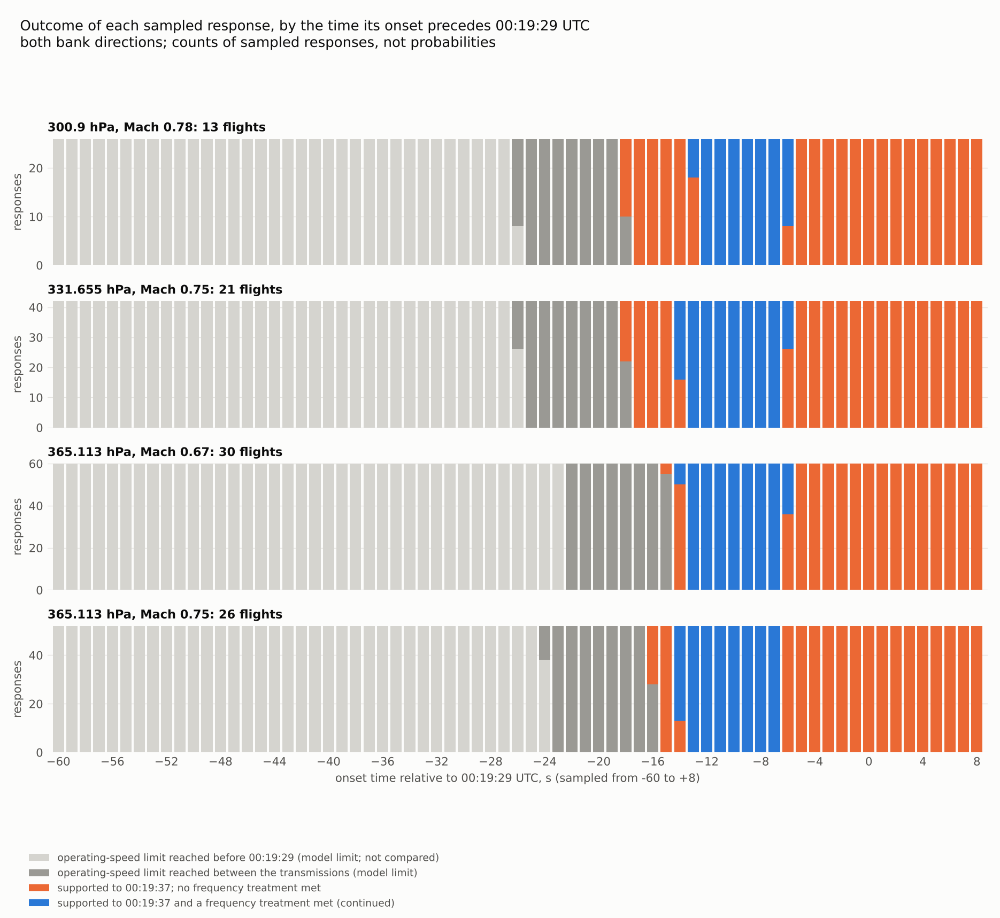
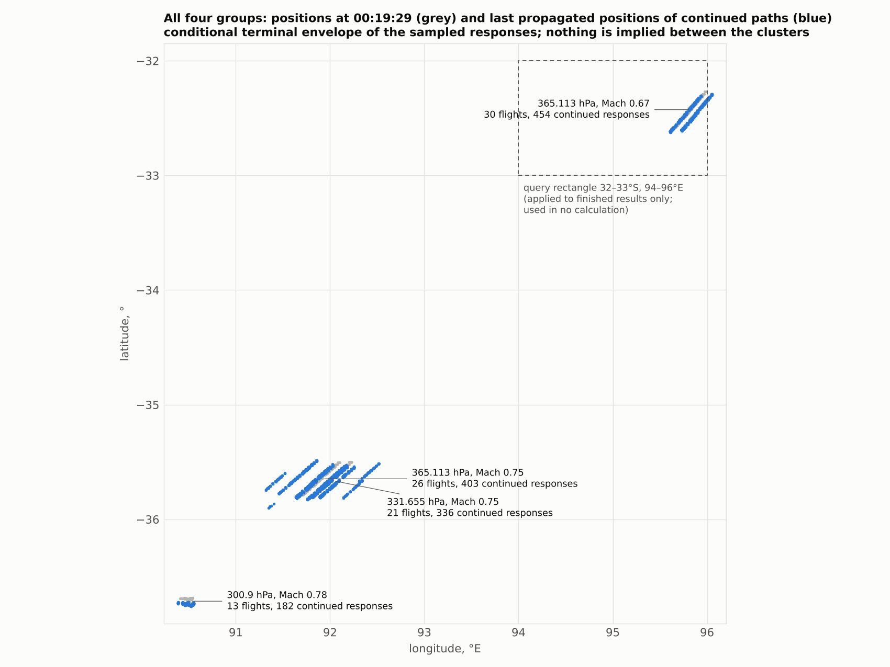
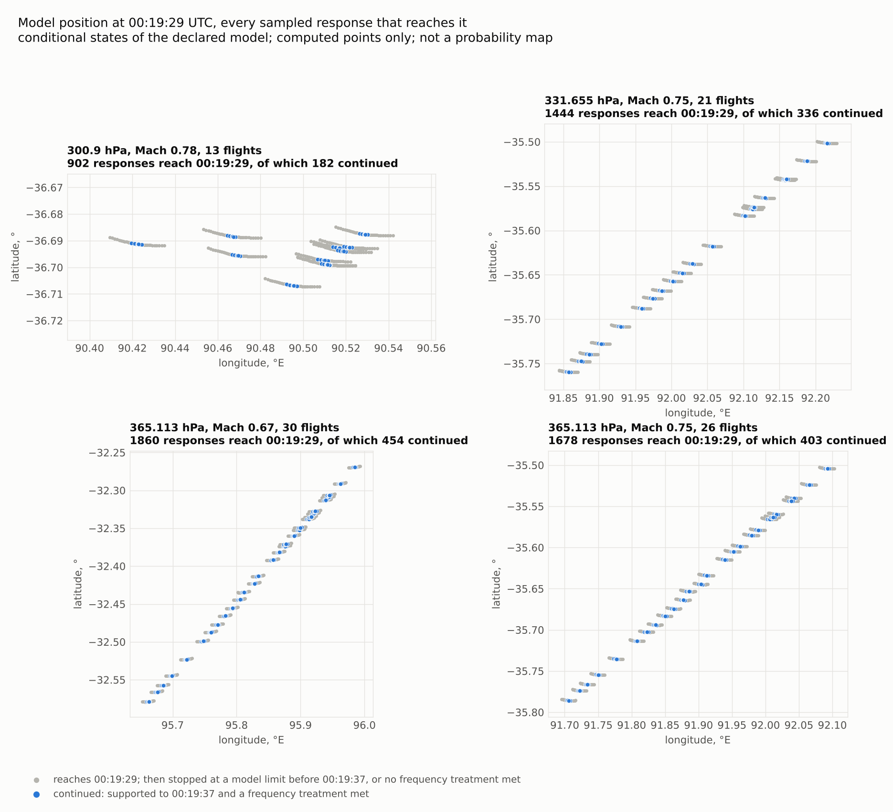
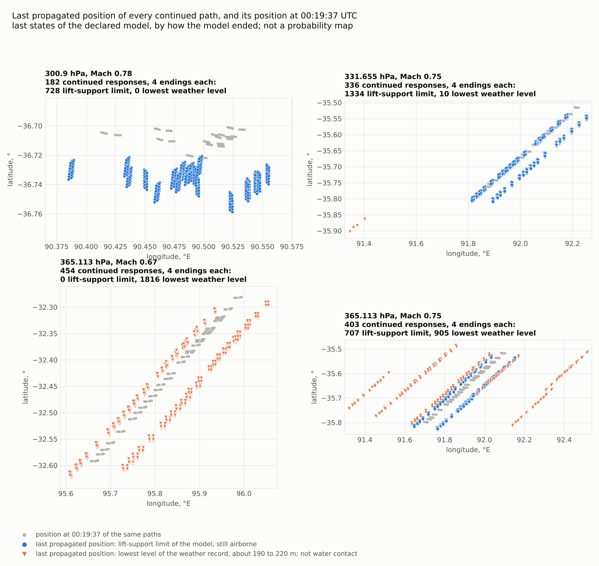

The 16 November cruise catalogue ends at 00:11 UTC with every accepted flight still airborne. This experiment carries those flights to the two final satellite transmissions. After the modelled engine fuel runs out, a declared response is applied: the lift is reduced and the aircraft banks to 60°. The result is compared with the timing and frequency recorded at 00:19:29 and 00:19:37 UTC, and each compatible response is followed until the model can no longer support it. Computed 16–17 November 2026; reviewed and accepted with one recorded provenance exception.
Each of the 266 accepted cruise flights has one status, set by its saved fuel-exhaustion time alone.
| Status | Flights | What was done |
|---|---|---|
| Engine fuel runs out before 00:19:29 | 90 | Terminal responses computed |
| Engine fuel runs out after both final transmissions (73 to 1,142 s after 00:19:29) | 139 | Kept in the catalogue; not propagated |
| Engines still running at 00:40 | 37 | Kept in the catalogue; no fuel-exhaustion state exists |
A fuel event later than a transmission cannot have caused a response before it. That is all the second and third statuses say. Those 176 flights are not rejected under another electrical or control sequence, which this experiment does not examine.
| Speed and cruise level | Arrival at 19:41 | Label on the figures | Flights | Engine fuel runs out before 00:19:29 |
|---|---|---|---|---|
| Mach 0.78 at 33,985 ft | 29,987 ft | 300.9 hPa, Mach 0.78 | 13 | 136 to 158 s |
| Mach 0.75 at 31,946 ft | 27,830 ft | 331.655 hPa, Mach 0.75 | 21 | 176 to 198 s |
| Mach 0.67 at 25,661 ft (level held) | 25,661 ft | 365.113 hPa, Mach 0.67 | 30 | 377 to 400 s |
| Mach 0.75 at 31,946 ft | 25,661 ft | 365.113 hPa, Mach 0.75 | 26 | 489 to 509 s |
No window was placed on the interval between the fuel event and 00:19:29. It is a reported outcome of the cruise catalogue, and all 90 flights were computed whatever its value. The figures label each group by the pressure level and Mach of its arrival at 19:41; two groups cruise at the same level after different climbs, so this page names them by their arrival height where needed.
| Arrival at 19:41 | Cruise level | Flights | Status |
|---|---|---|---|
| Mach 0.67, arriving at 25,661 ft | 30,053 ft | 37 | Engine fuel runs out after both final transmissions |
| Mach 0.75, arriving at 25,661 ft | 33,985 ft | 34 | Engine fuel runs out after both final transmissions |
| Mach 0.75, arriving at 27,830 ft | 33,985 ft | 28 | Engine fuel runs out after both final transmissions |
| Mach 0.67, arriving at 27,830 ft | 27,830 ft | 20 | Engine fuel runs out after both final transmissions |
| Mach 0.75, arriving at 29,987 ft | 33,985 ft | 12 | Engine fuel runs out after both final transmissions |
| Mach 0.75, arriving at 29,987 ft | 31,946 ft | 8 | Engine fuel runs out after both final transmissions |
| Mach 0.67, arriving at 27,830 ft | 30,053 ft | 37 | Engines still running at 00:40 |
Before the response. From the fuel event the model has no thrust and holds the lift coefficient and bank angle it had at that moment.
The response. At a chosen onset time the lift coefficient falls to half its value and the bank goes to 60°, both over 10 s. Onset times were sampled every second from 60 s before to 8 s after 00:19:29 (69 values), with the bank to the left and to the right. That is 138 responses for each flight and 12,420 responses in all. Each was propagated to 00:19:37 or to the first point where the performance model stops.
The fuel-flow multiplier (1.000), the fuel on board, the fuel-event time and every command before the event are those of the cruise catalogue, unchanged. No cruise flight was recomputed.
| Measurement | Role in this experiment |
|---|---|
| Timing (BTO) at 00:19:29 | Compared, not fitted. The residual is formed against 18,400 µs and reported against bands of 62, 124 and 186 µs: one, two and three standard deviations for this message type (Davey et al., 2016). The bands select nothing. |
| Frequency (BFO) at 00:19:29 and 00:19:37 | Compared under four treatments: two calibration conventions (the frozen equations; the same with the earlier common offset of 0.554 Hz), each with and without an oscillator warm-up allowance of 17 to 136 Hz at the log-on, falling by 0 to 6 Hz by the acknowledgement (Holland, 2017). Which treatment applies depends on how long the satellite unit had been without power, which this model does not determine. |
| Timing at 00:19:37 | Not evaluated. The predicted value is stored; forming a residual would need a declared, sourced correction. |
| Measurement at 22:41 | Excluded: no prediction, residual or comparison was made. Earlier exposure of that measurement is disclosed; it is not described as unread. |
A response is continued beyond 00:19:37 if the model supports it to 00:19:37 and it meets the frequency requirement under at least one of the four treatments. Timing does not enter that rule, so every response that could satisfy both measurements together is among those continued.
| Outcome | Kind | Responses |
|---|---|---|
| Operating-speed limit reached before 00:19:29 | Model limit; not compared with either transmission | 6,536 |
| Operating-speed limit reached between the two transmissions | Model limit | 1,423 |
| Supported to 00:19:37; no frequency treatment met | Measurement mismatch | 3,086 |
| Supported to 00:19:37 and a frequency treatment met (continued) | 1,375 | |
| Calculation did not finish in a defined way | 0 | |
| Total | 12,420 |
All 7,959 model-limit stops are at the operating Mach or airspeed limit, reached 22.6 to 27.3 s after the onset of the response. A model-limit stop says where this stage of the model can no longer follow the aircraft. It is kept apart from a mismatch with a measurement.
Both bank directions and all 90 flights together: 180 responses at each onset time. Onset is in seconds relative to 00:19:29; negative is earlier.
| Onset (s) | Outcome of the 180 responses |
|---|---|
| −60 to −19 | All 180 reach the operating-speed limit before 00:19:37 |
| −18 | 144 reach the operating-speed limit before 00:19:37; 36 meet no frequency treatment |
| −17 | 112 reach the operating-speed limit before 00:19:37; 68 meet no frequency treatment |
| −16 | 88 reach the operating-speed limit before 00:19:37; 92 meet no frequency treatment |
| −15 | 55 reach the operating-speed limit before 00:19:37; 125 meet no frequency treatment |
| −14 | 75 continued; 105 meet no frequency treatment |
| −13 | 162 continued; 18 meet no frequency treatment |
| −12 to −7 | All 180 continued |
| −6 | 58 continued; 122 meet no frequency treatment |
| −5 to +8 | All 180 meet no frequency treatment |
The continued responses begin 6 to 14 s before 00:19:29, in both bank directions. That set touches neither end of the sampled onset times. Every one of the 90 flights has 14, 15 or 16 continued responses (30, 5 and 55 flights), and the two bank directions give almost the same counts (687 left, 688 right).

Outcome of every sampled response by onset time, one panel for each group. Light grey and dark grey: operating-speed limit reached before 00:19:29, or between the transmissions. Orange: supported to 00:19:37 with no frequency treatment met. Blue: continued. Counts of sampled responses, not probabilities.
Timing at 00:19:29. For the 5,884 responses that reach 00:19:29, the residual lies between −18.0 and +24.8 µs. Every one is inside the 62 µs band. Within one flight the residual varies by at most 2.3 µs across its continued responses, so it is set by the cruise flight and hardly at all by the response. The cruise flights were fitted to the timing at 20:41:05, 21:41:27 and 00:11:00; the 00:19:29 timing was not fitted.
Against an unverified alternative value of 18,440 µs every residual is 40 µs larger. Then 363 of the 403 continued responses of the Mach 0.75 group arriving at 25,661 ft have residuals above 62 µs, the largest 64.8 µs: outside the 62 µs band and inside the 124 µs band; all other continued responses stay inside 62 µs.
Frequency. Where no response has begun by 00:19:29, the model predicts 214 to 245 Hz at that time (recorded: 182 Hz), with the aircraft descending at 4 to 13 m/s. For the continued responses the predicted change over the 8 s between the transmissions is −194 to −172 Hz (recorded: −184 Hz).
| Frequency treatment | Responses meeting it | Flights | Onset before 00:19:29 | Vertical speed at 00:19:29 | Vertical speed at 00:19:37 |
|---|---|---|---|---|---|
| Frozen equations, no warm-up | 358 | 90 | 6 to 8 s | −28.5 to −16.9 m/s | −83.8 to −70.0 m/s |
| Earlier offset, no warm-up | 357 | 90 | 6 to 8 s | −29.0 to −17.0 m/s | −84.2 to −70.0 m/s |
| Frozen equations, warm-up | 1,196 | 90 | 6 to 14 s | −70.0 to −20.9 m/s | −120.6 to −75.2 m/s |
| Earlier offset, warm-up | 1,197 | 90 | 6 to 14 s | −70.1 to −22.0 m/s | −120.8 to −75.6 m/s |
| Any of the four | 1,375 | 90 | 6 to 14 s | −70.1 to −16.9 m/s | −120.8 to −70.0 m/s |
Negative vertical speed is a descent. In feet per minute the last row is a descent of 3,300 to 13,800 at 00:19:29 and 13,800 to 23,800 at 00:19:37.
Both measurements together. Because every timing residual is inside 62 µs, the counts of responses meeting the 00:19:29 timing and both frequencies together equal the frequency counts above, for all three timing bands. A joint satellite match does not establish an electrical explanation of the log-on.
The model has one aggregate fuel event and no electrical system. It starts each flight’s APU account at the 6.80388555 kg (15 lb) reserve imposed by the cruise model and draws it down at the model’s burn rate, at which the reserve lasts 412.5 s from the fuel event.
| Group | Flights | Fuel event before 00:19:29 | Model APU fuel left at 00:19:29 | At 00:19:37 | Status of the continued responses |
|---|---|---|---|---|---|
| Mach 0.78 at 33,985 ft | 13 | 136 to 158 s | 4.20 to 4.55 kg | 4.07 to 4.42 kg | 182 conditional |
| Mach 0.75 at 31,946 ft, arriving at 27,830 ft | 21 | 176 to 198 s | 3.53 to 3.90 kg | 3.40 to 3.77 kg | 336 conditional |
| Mach 0.67 at 25,661 ft | 30 | 377 to 400 s | 0.21 to 0.58 kg | 0.08 to 0.45 kg | 454 conditional |
| Mach 0.75 at 31,946 ft, arriving at 25,661 ft | 26 | 489 to 509 s | 0 | 0 | 403: model APU fuel exhausted before a final transmission |
“Conditional” means only that the model’s reserve lasts past both transmissions. It depends on every assumption of the fuel and power account and makes no claim that an APU started. For the Mach 0.75 group arriving at 25,661 ft the reserve is gone about 76 to 96 s before 00:19:29, so its 403 continued responses carry no conditional electrical account in this model. For the Mach 0.67 group the reserve ends about 5 to 27 s after 00:19:37.
Every interval from the fuel event to 00:19:29 here is longer than 120 s. That is a reported difference, not an exclusion. The grouping is an observed association between cruise level, fuel-event time and reserve; the reserve itself is an assumption of the cruise model.
Positions of the continued responses. Heights are WGS-84 ellipsoidal heights, rounded to 100 ft.
| Group | Continued responses | Latitude at 00:19:29 | Longitude | Height at 00:19:29 | Height at 00:19:37 |
|---|---|---|---|---|---|
| Mach 0.78 at 33,985 ft | 182 | 36.69 to 36.71°S | 90.42 to 90.53°E | 30,000 to 31,500 ft | 27,600 to 30,200 ft |
| Mach 0.75 at 31,946 ft, arriving at 27,830 ft | 336 | 35.50 to 35.76°S | 91.85 to 92.22°E | 27,000 to 28,100 ft | 24,700 to 26,900 ft |
| Mach 0.67 at 25,661 ft | 454 | 32.27 to 32.58°S | 95.66 to 95.99°E | 15,100 to 16,500 ft | 12,600 to 15,400 ft |
| Mach 0.75 at 31,946 ft, arriving at 25,661 ft | 403 | 35.50 to 35.79°S | 91.70 to 92.09°E | 18,500 to 19,800 ft | 16,000 to 18,500 ft |
The largest separation between two model positions at 00:19:29 within a group is 12, 45, 47 and 48 km in the order of the table. That spread comes from the different cruise flights of the group; one flight’s responses lie within a few kilometres of each other. The two Mach 0.75 groups overlap, with centres about 11 km apart. The Mach 0.78 group is about 175 km to their south-west, and the Mach 0.67 group about 505 km to their north-east.

All four groups: model positions at 00:19:29 (grey) and last propagated positions of the continued paths (blue). Nothing is implied between the clusters: cruise levels and speeds between the tested ones have not been computed. The dashed rectangle is the query described below; it was used in no calculation.

Model position at 00:19:29 of every sampled response that reaches it. Blue: continued. Grey: stopped at a model limit before 00:19:37, or no frequency treatment met.
All 1,375 continued responses went through the published four-stage continuation: to the operating-speed limit, to the onset of drag rise, to Mach 0.89, and then onward under two bank laws (60° held; roll to wings level over 10 s) and two drag-rise formulations. That gives four endings for each response, 5,500 endings in all. None ended before the last stage.
| Group | Lift-support limit of the model, airborne | Lowest level of the weather record |
|---|---|---|
| Mach 0.78 at 33,985 ft | 728 | 0 |
| Mach 0.75 at 31,946 ft, arriving at 27,830 ft | 1,334 | 10 |
| Mach 0.67 at 25,661 ft | 0 | 1,816 |
| Mach 0.75 at 31,946 ft, arriving at 25,661 ft | 707 | 905 |
| All | 2,769 | 2,731 |
No path reached the model surface inside the weather record, so there is no propagated surface contact. No path was still airborne at the 00:29:37 horizon. The 2,769 endings at the lift-support limit are 0.8 to 6.6 km above the model surface, at Mach 0.97 and descending at 122 to 195 m/s; the model does not say where these reach the surface. The other 2,731 end at the lowest level of the weather record, 219 to 232 m above the model surface. That is not water contact.
| Ending | Endings | Height above the model surface | Time after 00:19:37 | Distance from the position at 00:19:37 | Mach | Vertical speed |
|---|---|---|---|---|---|---|
| Lift-support limit, Mach 0.78 at 33,985 ft | 728 | 6.0 to 6.6 km | 13 to 22 s | 2.9 to 4.8 km | 0.97 | −188 to −162 m/s |
| Lift-support limit, Mach 0.75 arriving at 27,830 ft | 1,334 | 4.2 to 5.2 km | 15 to 27 s | 3.3 to 5.5 km | 0.97 | −195 to −151 m/s |
| Lift-support limit, Mach 0.75 arriving at 25,661 ft | 707 | 0.8 to 1.7 km | 21 to 31 s | 4.6 to 6.0 km | 0.97 | −177 to −122 m/s |
| Lowest weather level, Mach 0.67 at 25,661 ft | 1,816 | 219 to 220 m | 23 to 34 s | 4.6 to 7.0 km | 0.94 to 0.97 | −172 to −45 m/s |
| Lowest weather level, Mach 0.75 arriving at 25,661 ft, bank held | 299 | 229 to 231 m | 28 to 36 s | 5.4 to 7.0 km | 0.96 | −155 to −133 m/s |
| Lowest weather level, Mach 0.75 arriving at 25,661 ft, roll to wings level | 606 | 228 to 232 m | 115 to 199 s | 21 to 39 km | 0.68 to 0.81 | −80 to −3 m/s |
| Lowest weather level, Mach 0.75 arriving at 27,830 ft, roll to wings level | 10 | 232 m | 380 to 383 s | 76 km | 0.60 | −35 m/s |
Last propagated times run from 00:19:50 to 00:26:00. With the bank held, the last propagated position is 3 to 7 km from the position at 00:19:37. Only the roll-to-wings-level variants move further: up to 39 km in one group, and 76 km for 10 endings of 4 flights in another.
Change in the last propagated position of one response when the bank law or the drag formulation is changed.
| Group | Last propagated positions | Between the two bank laws | Between the two drag formulations |
|---|---|---|---|
| Mach 0.78 at 33,985 ft | 36.72 to 36.76°S, 90.39 to 90.56°E | 0.14 to 0.20 km | 0.19 to 0.23 km |
| Mach 0.75 at 31,946 ft, arriving at 27,830 ft | 35.54 to 35.90°S, 91.35 to 92.25°E | 0.13 to 71 km | 0.20 to 72 km |
| Mach 0.67 at 25,661 ft | 32.29 to 32.62°S, 95.61 to 96.05°E | 0.11 to 1.0 km | under 0.03 km |
| Mach 0.75 at 31,946 ft, arriving at 25,661 ft | 35.48 to 35.83°S, 91.32 to 92.52°E | 16 to 34 km | 0.99 to 34 km |
Where the model ends at the lift-support limit the four variants agree within a few hundred metres, because the path ends before they can diverge. Where a roll to wings level lets the model recover from the dive, the last position moves by tens of kilometres and depends on the drag formulation. Everything beyond the operating-speed limit rests on an aerodynamic extension outside the performance data, and beyond Mach 0.89 the aerodynamics are unvalidated.

Last propagated position of every continued path, with its position at 00:19:37 (grey). Blue circles: lift-support limit of the model, still airborne. Orange triangles: lowest level of the weather record; not water contact.
The rectangle 32 to 33°S, 94 to 96°E, an area of interest to the investigator, was applied to the finished tables as a query. It entered no calculation, selection or rule.
| Sampled model states | Inside the rectangle | Of |
|---|---|---|
| Responses supported to 00:19:29, position at 00:19:29 | 1,860 | 5,884 |
| Continued responses, position at 00:19:37 | 454 | 1,375 |
| Last propagated positions | 1,672 | 5,500 |
All of these belong to the Mach 0.67 group at 25,661 ft. Its 30 flights lie inside the rectangle at both transmissions, and 1,672 of its 1,816 last propagated positions are inside; the other 144 are east of 96°E, the furthest at 96.05°E. No position of the other three groups is inside. This is a count of sampled model states. It is not a probability, and it does not rank the groups.
These are interpretations of the computed outcomes above. They hold for this response family and these 90 flights.
Numerical checks. 24 onset responses and 8 continuations were repeated at half the integration step, and all met their criteria. The largest position differences were 3.6 mm and 6.5 mm; the largest differences in predicted frequency and timing were 0.00006 Hz and 0.00001 µs. These measure the stability of the calculation, not the accuracy of the model for the real aircraft.
Cost. 6.8 hours of computation were charged against declared allowances of 40.9 hours. No ceiling was reached and no calculation ended in an undefined way.
A052_TO275.F1, left bank, onset 2 s after 00:19:29. Computed twice because publication erased its first stored result and settlement. The second computation is retained. Equality with the lost first computation cannot be established. The cause was a defect in the step that published the two workers’ files: lines appended by one worker during the other’s publication were overwritten. The journal of attempts is short by three lines as a result. This response met no frequency treatment, like all 180 responses at that onset time; it is not a continued response and takes part in no numerical check. Every count on this page is a count of the surviving records.Review. An independent review of the published journal, account, manifest and check records found each of the 13,925 planned identities settled once, with the single irregularity above. The reviewer did not reread every stored response and trajectory; that each of the 12,420 responses and 1,375 continuations is present exactly once rests on the project’s own verification of the records. The frozen calculation and its raw records were left unchanged, and nothing was recomputed. A replacement for the publishing step has since been qualified separately; it has not yet been used for a production run.
| Hypothesis | Status | Reason |
|---|---|---|
| A response of this shape beginning 5 s before 00:19:29 or later meets the final frequencies | Not supported for any of 90 flights (2,520 responses) | The descent has not steepened enough by 00:19:37: predicted 23 to 243 Hz there against −2 Hz recorded. Measurement mismatch under all four treatments. |
| A response of this shape beginning 15 to 18 s before 00:19:29 meets the final frequencies | Not supported | Where the response is supported to 00:19:37, the predicted frequency at 00:19:29 is −96 to +3 Hz against 182 Hz recorded, too low for every treatment. |
| A response beginning 19 s or more before 00:19:29 | Not examined against the measurements | The operating-speed limit is reached before 00:19:37, where this stage of the model stops. Model limit, not a mismatch. |
| The 00:19:29 timing narrows the set of responses | Not supported | Every residual is within 25 µs of 18,400 µs. |
| A response whose 10 s transition is still under way at 00:19:37 can meet the frequencies | Not supported in this family | None of the 1,800 responses with onsets from 1 s before to 8 s after 00:19:29 met a treatment. |
| The continued paths give surface positions | Not supported | No path reaches the model surface; about half end at the lift-support limit in the air. |
Every result on this page is compiled from the published tables below by scripts/build_terminal_responses.py and inserted when the page is built. Constants of the method, the recorded measurements and the reviewed count of planned identities are quoted from the method and findings. The copies held by the Atlas are byte-identical to the pinned source files, with their hashes in the source manifest.
| Table | Rows | Atlas copy | Pinned source |
|---|---|---|---|
| Every response, one row each | 12,420 | RESPONSES.csv | source |
| Every ending of every continued path | 5,500 | CONTINUATION_ENDINGS.csv | source |
| By group, bank direction and onset time | 552 | BY_GROUP_BANK_ONSET.csv | source |
| By flight | 90 | SUMMARY_BY_FLIGHT.csv | source |
| By group, with a row for all four | 5 | SUMMARY_BY_GROUP.csv | source |
| Flights not propagated | 176 | FLIGHTS_NOT_PROPAGATED.csv | source |
| Numerical checks | 32 | NUMERICAL_CHECKS.csv | source |
| Provenance exceptions | 1 | PROVENANCE_EXCEPTIONS.csv | source |
Documents: findings, deviations and audit trail; method; fuel and power account; handoff from the cruise catalogue. Calculation revision c370b2cf70b9 on cruise flights of revision 2a016b1294fa; results pinned at 429c11c. References: Holland, I. D. (2017), MH370 Burst Frequency Offset Analysis and Implications on Descent Rate at End-of-Flight; Davey, S., Gordon, N., Holland, I., Rutten, M. and Williams, J. (2016), Bayesian Methods in the Search for MH370, §5.2.
Summary on the overview · The cruise catalogue these flights come from · Inspect the cruise flights in the Flight Lab